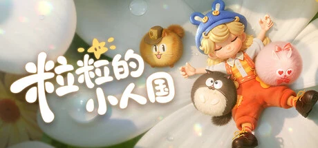

腾讯北极光工作室群与 LilliLandia Games 联合开发的小人国题材生活模拟治愈游戏。你意外变小到拇指大小，与「粒粒」们在书桌一角建造家园，用缩小枪把日常杂物变成建材，无任务驱动的慢生活体验。全球预约 800 万+，TapTap 9.6 分。
想象你趴在工位上补了个午觉，一睁眼整个世界忽然被放大了几百倍——你缩到拇指大小，站在自己的书桌上。叶子能当雨伞，闹钟和一栋楼一样大，牛奶盒是一栋洋房，眼镜盒是一张软沙发，耳机线蜿蜒着能荡秋千。这片地方叫「摇粒乡」，是当代打工人的黄粱一梦，也是官方所说的赛博乌托邦。这里没有任务、没有 KPI，甚至没有攻击键——只有一件事：重新发现寻常的美好。
你是「心想家」——不是这片土地的管理者，只是陪伴者。原住民叫「粒粒」：毛绒绒的卜卜族在乌噜村开裁缝铺，赛博金属的因索族马上要住进来；毛茸茸的乌帕替你穿越乌帕森林。你手里握着缩小枪，把巧克力棒缩成房梁、瓶盖敲成屋顶、纸牌搭成帐篷；你拿空气瓶去捕捉阳光，摇晃花朵采下花粉，用弹弓打落草尖那颗晨露、也能弹奏出一串白风铃。累了，就让一片花瓣托住你，或钻进郁金香的花苞里。
可越住下去越发现「变小」是一面镜子：那些你以为无聊的日常小物，为什么变小之后突然值得凝视？那些粒粒的对话，AI 会让它们记住你送过的礼、走过的路，它们真的记得你，还是你在写一人的独角戏？「暗星深井挑战」藏在暖光背后——治愈的另一面，是不是每个来这里的人心里都有一口没说过的深井？这不是打怪升级的故事，是关于「一个孤独的当代人，愿意在书桌角落停多久，把自己拼回一个完整的人」的故事——粒粒们摇着花朵招手，你今晚变小几点回？
「微观治愈童话」，是把类皮克斯绘本风和日常物品的巨物化缝进同一张书桌的美学。底子是富有生活感的风格化卡通渲染——暖光融融、毛绒绒的边缘、木桌温和光泽；变异在于把耳机、纽扣、瓶盖、蜡烛这些桌面杂物放大到建筑级别，制造微观视角特有的视觉反差。色彩以暖光的橘黄米白为骨，撞粒粒毛色的柔粉与花瓣的浅绿。整体调性温柔、克制、无压力，是那种「随手截图都是壁纸」的治愈系童话。
「微观治愈生活模拟」这套美学血脉清晰。1952 年玛丽·诺顿的儿童文学《The Borrowers 借东西的小人》定义了微缩题材的想象母题。2010 年吉卜力《借东西的小人阿莉埃蒂》把这套微观视角推到画面顶点，成为这一作最直接的美学母本。2020 年任天堂《集合啦！动物森友会》让治愈系生活模拟成为疫情时代的现象级产品。2020 年 Obsidian《Grounded》从生存对抗方向验证了微缩题材的可行性。粒粒的小人国走的是第三条路：把微缩题材从阿莉埃蒂的诗意、动森的社交、Grounded 的求生三种血脉里各取一勺，做成一款无任务无攻击的纯陪伴品类。腾讯春笋计划孵化，北极光工作室群银之心承接。
基于体验清单 · 审美偏好 · IP故事三维度综合选出
点击链接跳转到对应平台查看 · 仅整理外部链接